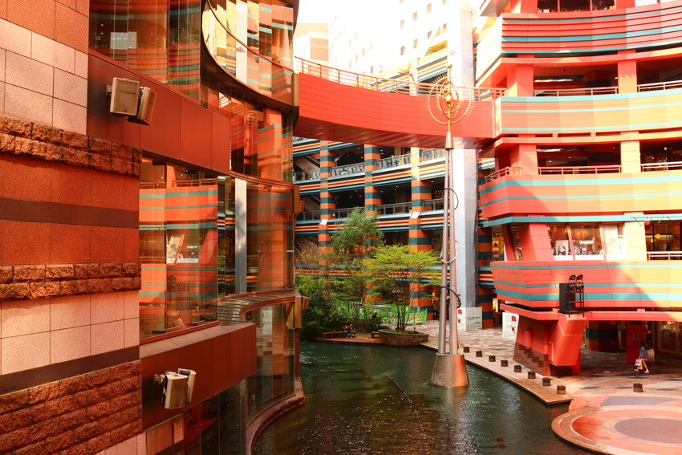

Hakata-ku (博多区) is a ward of the city of Fukuoka in Fukuoka Prefecture, Japan.
Many of Fukuoka Prefecture and Fukuoka City's principal government, commercial, retail and entertainment establishments are located in the district. Hakata-ku is also the location of Fukuoka's main train station, Hakata Station, Fukuoka Airport and the Hakata Port international passenger ship terminal.
It's canal city